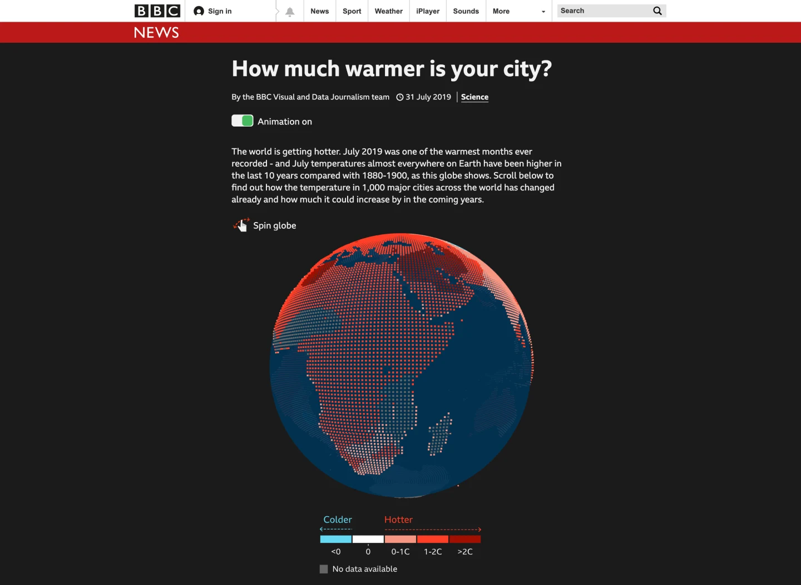
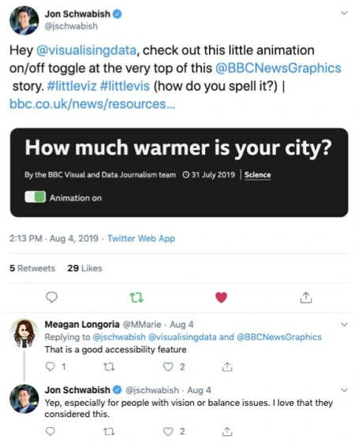

BBC NEWS · DATA STORYTELLING
How much warmer
is your city?
Readers could choose from around 1,000 cities to see how temperatures had changed and how much warmer their city could get by 2100.
I led development of the scroll-driven charts and SVG animations, adapted the team’s scrollytelling library, Scrollama, for the project, and contributed to the 3D globe.
INTERACTIVE PREVIEW
From the global picture
to a city near you.
Explore the global temperature map, a city chart and an illustration of Arctic sea ice.

GLOBAL VIEW“Amazing from start to finish. Proves the power of data visualisation when it comes to illustrating an important topic.”
Four possible futures, one chart
Showing all four emissions scenarios at once made the chart hard to follow. Giving each one a separate chart made the differences hard to spot. I built a D3 chart that introduced the scenarios one at a time as readers scrolled, so they could compare the projections for their city on the same axes.
I adapted Scrollama to fit the BBC’s project tooling and removed repeated code. The
chart used
position: sticky
to stay in view as readers moved through the text. I checked for browser support and
switched to
position: fixed
in older browsers such as Internet Explorer 11 (yep, we still had to support it!).
After readers explored the projections for their city, we showed what warming could mean in three places: Jakarta, New York and the Arctic. I developed the animated SVG illustrations that accompanied those examples.
Motion with an off switch
I’d introduced a motion toggle in Falling through the pay gap and adapted it for this story. I used JavaScript events so one switch could turn off the globe rotation, chart transitions and illustrations before any of them began. The switch started off when the reader’s device was set to reduce motion.
Readers could tab to controls and use the arrow keys to move through the story, including the chart sequence. We provided a text description of the globe for screen reader users and made sure the text alongside the chart explained the projections on its own.

One codebase for 27 languages
The article was published in 27 languages - a department record at the time! We worked with the World Service teams to gather all the translated content in one spreadsheet, which we then converted into JSON and outputted variations of the page for each language.
Loading only the data readers needed
Publishing in 27 languages meant designing for a wider range of devices and connections than we typically saw from our UK audience. Some readers would open the story on older phones, slow connections or limited data plans, so the initial download had to stay small.
We loaded the globe data first, split the projections into small files by city and fetched only the file for the city the reader chose. We also deferred loading images and illustrations until readers approached them. I built fallbacks for the animated SVGs and a static map that showed the globe’s temperature data when JavaScript was unavailable.
I wrote about how we built the interactive for the BBC Visual and Data Journalism team blog.